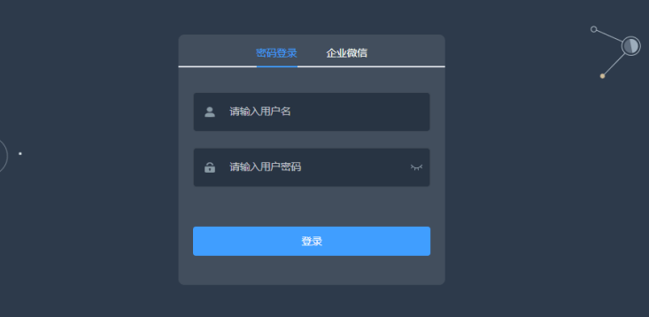

案例描述 本案例讲述如何使用docker-compose部署一个高性能、高灵活性的协程框架Hyperf，具体如下：
（1）了解MariaDB服务的容器化部署。
（2）了解Redis服务的容器化部署。
（3）了解Hyperf服务的容器化部署。
（4）了解Nginx服务的容器化部署。
规划节点 节点规划，见表1-1。
表1-1节点规划
IP 主机名 节点
10.24.2.17
master
docker-compose节点
10.24.2.18
-
桌面化测试节点
基础准备 确保Docker已安装完成。
案例实施 Hyperf概述 尽管现在基于PHP语言开发的框架处于一个百家争鸣的时代，但仍旧未能看到一个优雅的设计与超高性能的共存的完美框架，亦没有看到一个真正为PHP微服务铺路的框架，此为Hyperf及其团队成员的初衷。
Hyperf是一个高性能、高灵活性的渐进式PHP协程框架，内置协程服务器及大量常用的组件，性能较传统基于PHP-FPM的框架有质的提升，提供超高性能的同时，也保持着极其灵活的可扩展性，标准组件均基于PSR标准实现和强大的依赖注入设计，保证了绝大部分组件或类都是可替换与可复用的。
Hyperspeed + Flexibility = Hyperf，从名字上就可以看出超高速和灵活性是Hyperf的基因。对于超高速，Hyperf基于Swoole和Swow协程，并在框架设计上进行大量的优化以确保超高性能的输出。对于灵活性，Hyperf强大的依赖注入组件，组件均基于PSR标准的契约和由Hyperf定义的契约实现，达到框架内的绝大部分的组件或类都是可替换的。
Hyperf运行环境如下：
Linux
PHP 8.0+
Swoole 4.5+ or Swow
基础准备 下载软件包至本地：
1 2 [root@master ~]# ls Hyperf.tar.gz
解压软件包并导入镜像：
1 2 [root@master ~]# tar -zxf Hyperf.tar.gz [root@master ~]# docker load -i Hyperf/images/centos_7.9.2009.tar
安装Docker Compose：
1 2 3 4 5 6 [root@master ~]# cp Hyperf/docker-compose-Linux-x86_64 /usr/bin/docker-compose [root@master ~]# docker-compose version docker-compose version 1.25.0, build 0a186604 docker-py version: 4.1.0 CPython version: 3.7.4 OpenSSL version: OpenSSL 1.1.0l 10 Sep 2019
容器化部署MySQL （1）编写Dockerfile
编写init.sh脚本：
1 2 3 4 5 6 7 8 9 [root@master ~]# cd Hyperf/ [root@master Hyperf]# vi mysql_init.sh # !/bin/bash mysql_install_db --user=root mysqld_safe --user=root & sleep 8 mysqladmin -u root password 'root' mysql -uroot -proot -e "grant all on *.* to 'root'@'%' identified by 'root'; flush privileges;" mysql -uroot -proot -e " source /opt/hyperf_admin.sql;"
编写yum源：
1 2 3 4 5 6 [root@master Hyperf]# vi local.repo [hyperf] name=hyperf baseurl=file:///root/yum gpgcheck=0 enabled=1
编写Dockerfile文件：
1 2 3 4 5 6 7 8 9 10 11 12 13 [root@master Hyperf]# vi Dockerfile-mysql FROM centos:7.9.2009 MAINTAINER Chinaskills RUN rm -rf /etc/yum.repos.d/* COPY local.repo /etc/yum.repos.d/ COPY yum /root/yum ENV LC_ALL en_US.UTF-8 RUN yum -y install mariadb-server COPY sql /opt/ COPY mysql_init.sh /opt/ RUN bash /opt/mysql_init.sh EXPOSE 3306 CMD ["mysqld_safe","--user=root"]
（2）构建镜像
1 2 3 4 5 6 7 8 9 10 11 12 13 14 15 16 17 18 19 20 21 22 23 24 25 26 27 28 29 30 31 32 33 34 35 36 37 38 39 [root@master Hyperf]# docker build -t hyperf-mysql:v1.0 -f Dockerfile-mysql . Sending build context to Docker daemon 643.8MB Step 1/12 : FROM centos:7.9.2009 ---> bae1bec259cb Step 2/12 : MAINTAINER Chinaskills ---> Using cache ---> d2a088574726 Step 3/12 : RUN rm -rf /etc/yum.repos.d/* ---> Using cache ---> a2c179e2b75a Step 4/12 : COPY local.repo /etc/yum.repos.d/ ---> Using cache ---> 6db3f98be6d2 Step 5/12 : COPY yum /root/yum ---> Using cache ---> f4b3b9061b09 Step 6/12 : ENV LC_ALL en_US.UTF-8 ---> Using cache ---> 523b8d138958 Step 7/12 : RUN yum -y install mariadb-server ---> Using cache ---> 0b66a990ade1 Step 8/12 : COPY sql /opt/ ---> Using cache ---> 38b8501435f5 Step 9/12 : COPY mysql_init.sh /opt/ ---> Using cache ---> 5f389602308d Step 10/12 : RUN bash /opt/mysql_init.sh ---> Using cache ---> bf5471931b94 Step 11/12 : EXPOSE 3306 ---> Using cache ---> 1e2eeada92b4 Step 12/12 : CMD ["mysqld_safe","--user=root"] ---> Using cache ---> f2312cf42712 Successfully built f2312cf42712 Successfully tagged hyperf-mysql:v1.0
容器化部署Redis （1）编写Dockerfile
1 2 3 4 5 6 7 8 9 10 11 [root@master Hyperf]# vi Dockerfile-redis FROM centos:7.9.2009 MAINTAINER Chinaskills RUN rm -rf /etc/yum.repos.d/* COPY local.repo /etc/yum.repos.d/ COPY yum /root/yum RUN yum -y install redis RUN sed -i 's/127.0.0.1/0.0.0.0/g' /etc/redis.conf && \ sed -i 's/protected-mode yes/protected-mode no/g' /etc/redis.conf EXPOSE 6379 CMD ["/usr/bin/redis-server","/etc/redis.conf"]
（2）构建镜像
1 2 3 4 5 6 7 8 9 10 11 12 13 14 15 16 17 18 19 20 21 22 23 24 25 26 27 28 29 30 [root@master Hyperf]# docker build -t hyperf-redis:v1.0 -f Dockerfile-redis . Sending build context to Docker daemon 643.8MB Step 1/9 : FROM centos:7.9.2009 ---> bae1bec259cb Step 2/9 : MAINTAINER Chinaskills ---> Using cache ---> d2a088574726 Step 3/9 : RUN rm -rf /etc/yum.repos.d/* ---> Using cache ---> a2c179e2b75a Step 4/9 : COPY local.repo /etc/yum.repos.d/ ---> Using cache ---> 6db3f98be6d2 Step 5/9 : COPY yum /root/yum ---> Using cache ---> f4b3b9061b09 Step 6/9 : RUN yum -y install redis ---> Using cache ---> 3604db0933a7 Step 7/9 : RUN sed -i 's/127.0.0.1/0.0.0.0/g' /etc/redis.conf && sed -i 's/protected-mode yes/protected-mode no/g' /etc/redis.conf ---> Using cache ---> 65610b0a9aa1 Step 8/9 : EXPOSE 6379 ---> Using cache ---> dbb3373a6209 Step 9/9 : CMD ["/usr/bin/redis-server","/etc/redis.conf"] ---> Using cache ---> d8c3f4a447fe Successfully built d8c3f4a447fe Successfully tagged hyperf-redis:v1.0
容器化部署Hyperf （1）编写Dockerfile
1 2 3 4 5 6 7 8 9 10 11 12 13 14 [root@master Hyperf]# cat Dockerfile-hyperf FROM centos:7.9.2009 ADD yum /root/yum ADD swoole-v4.8.3.zip /tmp RUN rm -rf /etc/yum.repos.d/* ADD local.repo /etc/yum.repos.d/local.repo RUN yum clean all RUN yum install -y autoconf dpkg-devel dpkg-dev gcc gcc-c++ yum-utils tzdata unzip RUN yum install -y php php-* RUN cd /tmp && unzip swoole-v4.8.3.zip && mv swoole-v4.8.3 swoole RUN cd /tmp/swoole && phpize && ./configure --enable-mysqlnd --enable-openssl --enable-http2 && make -s -j$(nproc) && make install RUN echo 'extension=swoole.so' > /etc/php.d/20-swoole.ini RUN echo "swoole.use_shortname = 'Off'" >> /etc/php.d/20-swoole.ini RUN php --ri swoole
（2）构建镜像
1 2 3 4 5 6 7 8 9 10 11 12 13 14 15 16 17 18 19 20 21 22 23 24 25 26 27 28 29 30 31 32 33 34 35 36 37 38 39 40 41 42 [root@master Hyperf]# docker build -t hyperf-admin:v1.0 -f Dockerfile-hyperf . Sending build context to Docker daemon 748MB Step 1/13 : FROM centos:7.9.2009 ---> eeb6ee3f44bd Step 2/13 : ADD yum /root/yum ---> Using cache ---> 4dc92be0540a Step 3/13 : ADD swoole-v4.8.3.zip /tmp ---> Using cache ---> 7cd702422151 Step 4/13 : RUN rm -rf /etc/yum.repos.d/* ---> Using cache ---> 65babffa6486 Step 5/13 : ADD local.repo /etc/yum.repos.d/local.repo ---> Using cache ---> ae992ad32138 Step 6/13 : RUN yum clean all ---> Using cache ---> 484e80f41425 Step 7/13 : RUN yum install -y autoconf dpkg-devel dpkg-dev gcc gcc-c++ yum-utils tzdata unzip ---> Using cache ---> 346bfd6340fa Step 8/13 : RUN yum install -y php php-* ---> Using cache ---> 9425e16fa12a Step 9/13 : RUN cd /tmp && unzip swoole-v4.8.3.zip && mv swoole-v4.8.3 swoole ---> Using cache ---> d12edd34a486 Step 10/13 : RUN cd /tmp/swoole && phpize && ./configure --enable-mysqlnd --enable-openssl --enable-http2 && make -s -j$(nproc) && make install ---> Using cache ---> 4198fe8c64dd Step 11/13 : RUN echo 'extension=swoole.so' > /etc/php.d/20-swoole.ini ---> Using cache ---> 9fd3b28c6411 Step 12/13 : RUN echo "swoole.use_shortname = 'Off'" >> /etc/php.d/20-swoole.ini ---> Using cache ---> 48a0313c8d64 Step 13/13 : RUN php --ri swoole ---> Using cache ---> cd0dee04ddaa Successfully built cd0dee04ddaa Successfully tagged hyperf-admin:v1.0
容器化部署前端服务 （1）编写Dockerfile
1 2 3 4 5 6 7 8 9 10 [root@master Hyperf]# vi Dockerfile-nginx FROM centos:7.9.2009 MAINTAINER Chinaskills RUN rm -rf /etc/yum.repos.d/* COPY local.repo /etc/yum.repos.d/ COPY yum /root/yum RUN yum -y install nginx RUN /bin/bash -c 'echo init ok' EXPOSE 80 CMD ["nginx","-g","daemon off;"]
（2）构建镜像
1 2 3 4 5 6 7 8 9 10 11 12 13 14 15 16 17 18 19 20 21 22 23 24 25 26 27 28 29 30 [root@master Hyperf]# docker build -t hyperf-nginx:v1.0 -f Dockerfile-nginx . Sending build context to Docker daemon 643.8MB Step 1/9 : FROM centos:7.9.2009 ---> bae1bec259cb Step 2/9 : MAINTAINER Chinaskills ---> Using cache ---> d2a088574726 Step 3/9 : RUN rm -rf /etc/yum.repos.d/* ---> Using cache ---> a2c179e2b75a Step 4/9 : COPY local.repo /etc/yum.repos.d/ ---> Using cache ---> 6db3f98be6d2 Step 5/9 : COPY yum /root/yum ---> Using cache ---> f4b3b9061b09 Step 6/9 : RUN yum -y install nginx ---> Using cache ---> 767105e717be Step 7/9 : RUN /bin/bash -c 'echo init ok' ---> Using cache ---> 850dea3bff50 Step 8/9 : EXPOSE 80 ---> Using cache ---> 0e06332a0dfc Step 9/9 : CMD ["nginx","-g","daemon off;"] ---> Using cache ---> ffd462173f7d Successfully built ffd462173f7d Successfully tagged hyperf-nginx:v1.0
编排部署Hyprtf （1）编写docker-compose.yml编排文件
1 2 3 4 5 6 7 8 9 10 11 12 13 14 15 16 17 18 19 20 21 22 23 24 25 26 27 28 29 30 31 32 33 34 35 36 37 38 39 40 41 42 43 44 45 46 47 48 [root@master Hyperf]# vi project/docker-compose.yaml version: '3.1' services: app: container_name: hyperf-admin image: hyperf-admin:v1.0 command: - /bin/sh - -c - | cd /data cp .env.dev.docker .env php -d memory_limit=-1 `which composer` i --no-dev rm -rf runtime/* php bin/hyperf.php start volumes: - ./backend:/data tty: true links: - mysql - redis environment: HOST_IP: 127.0.0.1 HOST_PORT: 9511 mysql: container_name: mysql image: hyperf-mysql:v1.0 ports: - 3307:3306 environment: TZ: Asia/Shanghai volumes: - ./docker/data:/var/lib/mysql:rw redis: image: hyperf-redis:v1.0 container_name: redis # command : redis-server nginx: image: hyperf-nginx:v1.0 container_name: nginx ports: - 8081:80 links: - app volumes: - ./docker/conf.d:/etc/nginx/conf.d - ./docker/log:/var/log/nginx - ./frontend:/var/www/frontend
（2）部署服务
1 2 3 4 5 6 [root@master Hyperf]# docker-compose -f project/docker-compose.yaml up -d Creating network "project_default" with the default driver Creating mysql ... done Creating redis ... done Creating hyperf-admin ... done Creating nginx ... done
查看服务：
1 2 3 4 5 6 7 8 [root@master Hyperf]# docker-compose -f project/docker-compose.yaml ps Name Command State Ports ------------------------------------------------------------------------------ hyperf-admin /bin/sh -c cd /data Up cp .en ... mysql mysqld_safe --user=root Up 0.0.0.0:3307->3306/tcp nginx nginx -g daemon off; Up 0.0.0.0:8081->80/tcp redis /usr/bin/redis-server /etc ... Up 6379/tcp
在浏览器上通过http://IP:8081访问，如图1所示：

账号:daodao和密码: a1a1a1，点击登录。如图2所示：
至此，Hyperf框架就部署完成了。